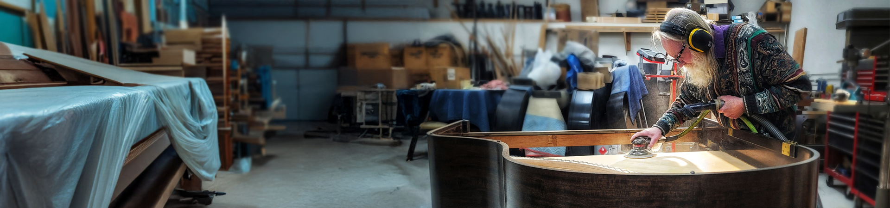

Ed McMorrow has been rebuilding and perfecting pianos for over fifty years. His career spans the most demanding roles in the profession: head technician at Seattle's Sherman Clay Steinway dealership for sixteen years and piano technician for the Seattle Symphony for thirteen.
Along the way, Ed developed a series of innovations that have changed how technicians think about piano tone. His LightHammer Tone Regulation procedure, which the Piano Technicians Journal called "particularly profound," develops dynamic tone and ideal feel simultaneously by adjusting hammer weight in relation to action leverage. His Fully Tempered Duplex Scale, published in the PTJ in March 2013, controls beating interactions across the keyboard compass. His Hybrid Wire Scaling protocols and Cent Differential Tuning system round out a body of work that is singular in the field.
Ed shares a deep appreciation for the warmer, richer tone of older Steinway, Mason & Hamlin, Chickering, Baldwin, and other fine instruments from the late 19th and early 20th century. His life's work has been understanding what made those pianos exceptional and applying that knowledge to historic rebuilds and modern instruments alike.
He documented decades of research and practical knowledge in his book, The Educated Piano, the only professional text that treats developing the feel and tone of a piano simultaneously. It has become a reference for technicians worldwide.
Ed works from his shop in Mukilteo, Washington, where he continues to rebuild, innovate, and teach.
Talk to Ed →